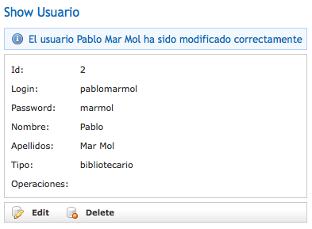

Construir la interfaz de usuario (II)
Tests
Siguiendo con la idea inicial de unir en un mismo framework varias de las herramientas de código abierto más utilizadas en el mundo del desarrollo de aplicaciones, Grails optó por incluir dos de los más populares frameworks de tests existentes en la actualidad como son JUnit y Canoo. Mediante estos frameworks vamos a poder realizar tests unitarios y de integración, así como tests funcionales. El propósito de éstos tests es verificar que la aplicación funciona tal y como esperamos y confirmar que ésta no ha dejado de funcionar después de iterar sobre la misma. Como estarás pensando, en una aplicación con muchas personas trabajando, es igual de importante desarrollar una buena aplicación como crear un buen paquete de tests. Hay incluso algunas teorías con las que están de acuerdo muchos desarrolladores que afirman que los tests deben ser implementados incluso con anterioridad a la aplicación.
En primer lugar vamos a realizar algunos tests de integración para verificar que los métodos handleLogin() y logout() funcionan correctamente. Posteriormente crearemos también unos tests funcionales para comprobar la funcionalidad del encabezado de nuestra aplicación. Empecemos por los tests de integración.
Tests de integración
En la primera sesión sobre Grails ya vimos como se pueden crear tests de integración en Grails gracias al comando grails create-integration-test seguido del controlador sobre el que deseamos generar los tests. Este comando creará un fichero en el directorio test/integration llamado UsuarioTests.groovy con el siguiente contenido:
package biblioteca
import grails.test.*
class UsuarioTests extends GroovyTestCase {
protected void setUp() {
super.setUp()
}
protected void tearDown() {
super.tearDown()
}
void testSomething() {
}
}
Recordemos que el método setUp() se ejecutará antes que cualquier test de la clase en cuestión, mientras que el método tearDown() será lo último que se haga. La típica utilidad del método setUp() es eliminar todos los datos de la correspondiente clase de dominio para dejarla en un estado conocido.
En primer lugar, vamos a comprobar el funcionamiento del método handleLogin() y para ello vamos a crear un par de tests, uno con un usuario correcto que compruebe que el usuario puede entrar en el sistema sin problemas y otro con un usuario incorrecto que no podrá entrar en el sistema. Los métodos deberán empezar por la palabra test para que sean tenidos en cuenta cuando se pase la batería de tests. El siguiente código muestra la función testHandleLogin() que comprueba que un usuario válido consigue entrar en el sistema.
Usuario u
UsuarioController uc
protected void setUp() {
//Creo el usuario
u = new Usuario(login:'frangarcia2',
password:'mipassword',
nombre:'Francisco José',
apellidos:'García Rico',
tipo:'administrador',
email:'fgarcia@ua.es')
u.save()
//Inicializo el controlador
uc = new UsuarioController()
}
protected void tearDown() {
u.delete()
}
void testHandleLogin() {
// Establece los parámetros del usuario
uc.params.login = u.login
// Invoca la acción
uc.handleLogin()
// Si la acción ha funcionado correctamente,
// la variable session tendrá los datos del usuario
def sessUsuario = uc.session.usuario
//Compruebo que la sesión del usuario se ha creado correctamente
//y que no es null
assert sessUsuario
assertEquals(u.login, sessUsuario.login)
// Y el usuario se redirige a la página para realizar operaciones
assertEquals "/operacion", uc.response.redirectedUrl
}
Para comprobar que la aplicación pasa correctamente nuestra batería de tests, debemos ejecutar el comando grails test-app. Este comando nos mostrará por pantalla toda la información relativa a los tests indicándonos si han tenido éxito o no, pero además, nos generará un informe completo sobre ellos en el directorio target/test-reports. Si sólo queremos realizar los tests sobre la clase recién creada UsuarioTests podemos ejecutar también el comando grails test-app biblioteca.Usuario.
Ya tenemos comprobado que un usuario válido en nuestro sistema puede entrar correctamente en el mismo. Lo siguiente que vamos a hacer es crear otro test que compruebe que un usuario no válido no puede entrar en la aplicación. Para ello creamos el método testHandleLoginInvalidUser() y en él comprobaremos, al igual que hicimos en el método anterior que el usuario es redirigido a una determinada página así como el mensaje de error devuelto por el sistema.
void testHandleLoginInvalidUser() {
// Establece los parámetros del usuario
uc.params.login = "loginincorrecto"
// Invoca la acción
uc.handleLogin()
//Compruebo que la acción ha redireccionado de nuevo a la página de login
assertEquals "/usuario/login", uc.response.redirectedUrl
//Compruebo el mensaje flash devuelto por el controlador
def message = uc.flash.message
assert message
assert message.startsWith("El usuario ${uc.params.login} no existe")
}
Volvemos a ejecutar el comando grails test-app biblioteca.Usuario para comprobar que todo sigue funcionando tal y como pensábamos.
Si todo ha ido bien, ya habremos realizado un test positivo (con un usuario válido) y otro negativo (con un usuario no válido) sobre nuestra aplicación para el método handleLogin(). Por último, vamos a realizar un nuevo test de integración para comprobar que el método logout() funciona correctamente. En este test comprobaremos que al abandonar el sistema, la variable session se queda vacía y que el usuario es redirigido a la página de /usuario/login para que vuelva a identificarse.
void testLogout() {
// Simulamos que el usuario ya se ha identificado en el sistema
// copiando sus datos en la variable session
uc.session.usuario = u
// Abandonamos la aplicación
uc.logout()
def sessUsuario = uc.session.usuario
//Comprueba que la variable sessUsuario es null
assertNull("Expected session user to be null", sessUsuario)
//Comprueba que el usuario es redirigido a la página usuario/login
assertEquals "/usuario/login", uc.response.redirectedUrl
}
Si ahora ejecutamos el comando grails test-app biblioteca.Usuario podemos comprobar si nuestros tests se han ejecutado correctamente.
A partir de ahora, lo ideal es desarrollar los tests de integración al mismo tiempo que se desarrolla la aplicación, ya que con ellos conseguiremos ahorrar mucho tiempo y esfuerzo cada vez que introduzcamos modificaciones en nuestra aplicación.
Tests funcionales
Los siguientes tests que vamos a utilizar en nuestra aplicación son los llamados tests funcionales y que como su propio nombre indica pretenden comprobar la funcionalidad de la aplicación. En estos tests se pretende imitar las posibles acciones que pueden los realizar los usuarios interactuando con la aplicación tales como hacer clics sobre enlaces y enviar formularios. Hasta ahora, esto lo estamos haciendo a mano y cada vez que hacemos un cambio debemos realizar una serie de pruebas mínimas para comprobar que no hemos hecho algo incorrecto al introducir estos cambios en el código. Con los tests funcionales vamos a poder automatizar este proceso.
Grails pone a disposición de los desarrolladores un plugin de Canoo, un popular framework de código abierto para la implementación de tests funcionales (recuerda que todos los frameworks utilizados en Grails ya han sido ampliamente utilizados por otras comunidades). Este plugin nos facilitará la realización de tests funcionales para las cuatro operaciones básicas de cualquier aplicación (creación, lectura, edición y borrado).
Como hemos dicho, la posibilidad de realizar tests funcionales en Grails viene gracias a un plugin del framework Canoo. En Grails tenemos la suerte de disponer de una comunidad de usuarios cada vez mayor que desarrollan aquello que en Grails no viene por defecto mediante un sistema de plugins. A lo largo de este curso, veremos diferentes plugins que podemos utilizar en el desarrollo de nuestras aplicaciones. Tenéis una amplia referencia de todos los plugins disponibles en Grails en la dirección http://www.grails.org/plugin/home.
La instalación del plugin de Canoo es tan sencilla como ejecutar el comando grails install-plugin webtest desde el directorio de la aplicación. Grails se encarga de descargar el plugin e instalarlo para que pueda ser utilizado en la aplicación. Una vez instalado, crearemos nuestro primer test funcional que pretende comprobar que la funcionalidad básica de la gestión de los usuarios (creación, edición, listado y eliminación) se ejecuta correctamente.
En ocasiones, cuando instalamos un plugin en Grails, éste crea nuevos comandos que pueden ser ejecutados para facilitarnos la labor. Este es el caso del plugin de Canoo, que nos crea el comando create-webtest, que recibe como parámetro el nombre
Para crear el test funcional ejecutamos el comando grails create-webtest Usuario. La ejecución de este comando creará un nuevo directorio llamado webtest dentro del directorio test de la aplicación con un dos subdirectorios: conf y biblioteca. Dentro del directorio conf se encuentra un archivo de configuración del plugin, que en principio no se debe modificar y que básicamente contiene la siguiente información:
| Nombre | Valor inicial | Descripción |
|---|---|---|
| wt.config.host | localhost | Nombre del servidor |
| wt.config.port | 8080 | Número de puerto donde se arranca el servidor |
| wt.config.protocol | http | Protocolo utilizado para la comunicación con el servidor |
| wt.config.summary | true | Indica si se debe imprimir un resumen del informe |
| wt.config.saveresponse | true | Indica si se debe guardar la respuesta en el informe |
| wt.config.resultfile | WebTestOverview.xml | Indica el nombre del fichero con el informe |
| wt.junitLikeReports.file | target/test-reports/webtest/TEST-WebTests.junit.xml | Indica el nombre del fichero con los resultados del informe generado |
| wt.config.haltonerror | false | Indica si se debe parar la ejecución del test en caso de que se encuentre un error |
| wt.config.errorproperty | webTestError | Indica el nombre de la propiedad Ant cuando se produce un error |
| wt.config.haltonfailure | false | Indica si se debe parar la ejecución del test en caso de que se encuentre un fallo |
| wt.config.failureproperty | webTestFailure | Indica el nombre de la propiedad Ant cuando se produce un fallo |
| wt.config.showhtmlparseroutput | true | Indica si se deben mostrar los errores y los fallos parseados en la consola |
Ahora que ya tenemos instalado el plugin de Canoo para la realización de tests funcionales, vamos a ver como quedaría nuestro primer test funcional. Para ello, cuando ejecutamos grails create-webtest Usuario, Grails creo un archivo en el directorio test/webtest/biblioteca llamado UsuarioWebTests.groovy que ya contiene un esqueleto de lo que podría ser un test funcional. Nosotros vamos a completar este esqueleto de test funcional para que conseguir nuestro objetivo.
package biblioteca
class UsuarioWebTests extends grails.util.WebTest {
// Unlike unit tests, functional tests are sometimes sequence dependent.
// Methods starting with 'test' will be run automatically in alphabetical order.
// If you require a specific sequence, prefix the method name (following 'test') with a sequence
// e.g. test001XclassNameXListNewDelete
void testSomething() {
invoke '/'
}
}
El primer test funcional que vamos a crear tal y como comentábamos anteriormente será un test que compruebe las operaciones básicas que se pueden realizar sobre los usuarios, que son listar, crear, editar y eliminar usuarios. En versiones anteriores, el plugin de webtest generaba automáticamente un test funcional para comprobar estas cuatro operaciones básicas, pero en las últimas versiones esta generación automática se ha eliminado. El contenido de este test funcional generado es el que se muestra a continuación.
package biblioteca
class UsuarioWebTests extends grails.util.WebTest {
// Unlike unit tests, functional tests are sometimes sequence dependent.
// Methods starting with 'test' will be run automatically in alphabetical order.
// If you require a specific sequence, prefix the method name (following 'test') with a sequence
// e.g. test001UsuarioListNewDelete
def testUsuarioListNewDelete() {
invoke 'usuario'
verifyText 'Home'
verifyListSize 0
clickLink 'New Usuario'
verifyText 'Create Usuario'
clickButton 'Create'
verifyText 'Show Usuario', description:'Detail page'
clickLink 'List', description:'Back to list view'
verifyListSize 1
group(description:'edit the one element') {
showFirstElementDetails()
clickButton 'Edit'
verifyText 'Edit Usuario'
clickButton 'Update'
verifyText 'Show Usuario'
clickLink 'List', description:'Back to list view'
}
verifyListSize 1
group(description:'delete the only element') {
showFirstElementDetails()
clickButton 'Delete'
verifyXPath xpath: "//div[@class='message']",
text: /.*Usuario.*deleted.*/,
regex: true
}
verifyListSize 0
}
String ROW_COUNT_XPATH = "count(//div[@class='list']//tbody/tr)"
def verifyListSize(int size) {
ant.group(description:"verify Usuario list view with $size row(s)") {
verifyText 'Usuario List'
verifyXPath xpath: ROW_COUNT_XPATH,
text: size,
description:"$size row(s) of data expected"
}
}
def showFirstElementDetails() {
clickLink '1', description:'go to detail view'
}
}
Echando un vistazo rápido al código, podemos intuir su funcionamiento. Hacer clic sobre enlaces (clickLink) o botones (clickButton), comprobar que un texto está en la página (verifyText) y comprobar el contenido encerrado en etiquetas del código HTML (verifyXPath) son algunos de los métodos en estos tests funcionales. Además, se ha creado un método (verifyListSize()) para comprobar cuantos usuarios aparecen en el listado.
Si ahora ejecutamos el comando grails test-app -functional (asegúrate de que la aplicación no se esté ejecutando en este momento, porque webtest necesita del puerto 8080) veremos como empiezan a ejecutarse los tests funcionales de nuestra aplicación. Sin embargo, nos ha surgido un problema y es que el test intenta crear un nuevo usuario sin haberse identificado en el sistema. Así que antes de empezar a crear usuarios debemos añadir el código necesario en el test para identificarnos en el sistema y posteriormente realizar todas las operaciones necesarias. Si añadimos el siguiente código inmediatamente después de verifyText 'Home' para identificarnos en el sistema, este problema estará solucionado.
group(description:'intento identificarme en el sistema') {
clickLink 'Login'
verifyText 'Login'
clickButton 'Login'
verifyText 'Logout'
clickLink 'Home', description:'Back home'
verifyText 'biblioteca.UsuarioController'
clickLink 'biblioteca.UsuarioController'
}
Si intentamos pasar de nuevo el test funcional con el comando grails test-app -functional y repasamos el informe correspondiente, veremos como este test ha fallado nuevamente. Este informe nos indica cuantos tests se han ejecutado correctamente e incluso nos da información de cuantos pasos han llegado a ejecutarse.
Echando un vistazo al informe, vemos como lo primero que nos indica es que la primera llamada al método verifyListSize() ha fallado y además nos indica que el valor que esperaba era 0 mientras que el encontrado ha sido el valor 5. Esto es debido a que los tests funcionales cuentan también con la información añadida en el archivo conf/BootStrap.groovy, con lo que el número de usuarios al arrancar la aplicación empieza desde 5. Debemos cambiar todas las líneas en nuestro test donde se comprueba esto para aumentarle el valor en 5, por ejemplo la primera comprobación quedaría verifyListSize 5, mientras que la segunda una vez creado el usuario verifyListSize 6.
Si volvemos a realizar los tests funcionales veremos como ahora el problema que nos da es que el usuario no ha podido ser creado correctamente. Esto es debido a que hemos dejado en blanco todos los campos del formulario. Para rellenarlos podemos utilizar la función setInputField() de la siguiente forma:
setInputField(name:'login','usuario2') setInputField(name:'password','mipassword') setInputField(name:'nombre','Usuario') setInputField(name:'apellidos','Dos') setInputField(name:'email','miemail@ua.es')
Ahora los campos necesarios para crear un usuario ya están completos y el test funcionará correctamente. Este será el contenido final del test funcional que acabamos de pasar satisfactoriamente.
package biblioteca
class UsuarioWebTests extends grails.util.WebTest {
// Unlike unit tests, functional tests are sometimes sequence dependent.
// Methods starting with 'test' will be run automatically in alphabetical order.
// If you require a specific sequence, prefix the method name (following 'test') with a sequence
// e.g. test001UsuarioListNewDelete
def testUsuarioListNewDelete() {
invoke 'usuario'
verifyText 'Home'
group(description:'intento identificarme en el sistema') {
clickLink 'Login'
verifyText 'Login'
clickButton 'Login'
verifyText 'Logout'
clickLink 'Home', description:'Back home'
verifyText 'biblioteca.UsuarioController'
clickLink 'biblioteca.UsuarioController'
}
verifyListSize 5
clickLink 'New Usuario'
verifyText 'Create Usuario'
setInputField(name:'login','usuario2')
setInputField(name:'password','mipassword')
setInputField(name:'nombre','Usuario')
setInputField(name:'apellidos','Dos')
setInputField(name:'email','miemail@ua.es')
clickButton 'Create'
verifyText 'Show Usuario', description:'Detail page'
clickLink 'List', description:'Back to list view'
verifyListSize 6
group(description:'edit the one element') {
showFirstElementDetails()
clickButton 'Edit'
verifyText 'Edit Usuario'
clickButton 'Update'
verifyText 'Show Usuario'
clickLink 'List', description:'Back to list view'
}
verifyListSize 6
group(description:'delete the only element') {
showFirstElementDetails()
clickButton 'Delete'
verifyXPath xpath: "//div[@class='message']",
text: /.*Usuario.*deleted.*/,
regex: true
}
verifyListSize 5
}
String ROW_COUNT_XPATH = "count(//div[@class='list']//tbody/tr)"
def verifyListSize(int size) {
ant.group(description:"verify Usuario list view with $size row(s)") {
verifyText 'Usuario List'
verifyXPath xpath: ROW_COUNT_XPATH,
text: size,
description:"$size row(s) of data expected"
}
}
def showFirstElementDetails() {
clickLink '1', description:'go to detail view'
}
}
El resultado del informe nos indica que todos los tests funcionales se han ejecutado correctamente y que nuestra aplicación funciona tal y como esperábamos.
Un aspecto importante en los tests funcionales es el orden en el que se ejecutan. Los tests se ejecutan por orden alfabético, con lo que si en algún momento es importante el orden para que los tests se ejecuten correctamente debemos añadir al principio del nombre del test, una numeración del estilo 0001, 0002, etc, para que los tests se ejecuten en el orden que nosotros queremos.
Validación y errores
Si navegamos un poco por los ejemplos que hemos desarrollado a lo largo de las sesiones de Grails, podemos encontrar varias referencias a los errores en funciones como hasErrors() que son utilizados en los controladores para detectar la presencia de errores, así como de los mensajes flash para mostrar al usuario determinados mensajes tales Usuario creado o Usuario modificado. Veamos algunos ejemplos.
Vamos a probar a crear un nuevo usuario y olvidaremos indicarle todos los datos posibles (login, password, nombre y apellidos). Como imaginamos, la aplicación nos indicará que se han cometido una serie de errores y que ha sido imposible crear el nuevo usuario. Es más, Grails nos mostrará un listado con todos los errores que se han cometido en el formulario. Si ahora abrimos el archivo de la vista create.gsp, rápidamente veremos el fragmento de código que se encarga de esta gestión de errores.
<g:hasErrors bean="${usuarioInstance}">
<div class="errors">
<g:renderErrors bean="${usuarioInstance}" as="list" />
</div>
</g:hasErrors>
En primer lugar, la etiqueta <g:hasErrors> comprueba si se han producido errores en el bean pasado por parámetro. En caso afirmativo, éstos se imprimirán gracias a la etiqueta <g:renderErrors>, la cual recorre todos los errores mostrándolos uno por uno. Esta última etiqueta permite el parámetro field para el caso de que sólo queramos mostrar el error producido en un determinado campo. Por ejemplo, si sólo queremos mostrar el error producido en el campo login podríamos escribir <g:renderErrors bean="${book}" as="list" field="title"/>. Lo mismo sucede con la etiqueta <g:hasErrors>.
Sin embargo, esta técnica funciona porque la página se genera directamente desde el controlador, algo que no siempre sucede. Por ejemplo, en el mismo caso de crear un nuevo usuario, si todo ha ido correctamente el usuario es redirigido a la vista show.gsp para mostrar los datos del usuario recién creado, pero además, en la parte superior se muestra un texto indicando que el usuario ha sido creado correctamente. Recordemos que el código de la función save() es el siguiente:
def save = {
def usuarioInstance = new Usuario(params)
if (usuarioInstance.save(flush: true)) {
flash.message = "${message(code: 'default.created.message',
args: [message(code: 'usuario.label', default: 'Usuario'), usuarioInstance.id])}"
redirect(action: "show", id: usuarioInstance.id)
}
else {
render(view: "create", model: [usuarioInstance: usuarioInstance])
}
}
Como vemos, si el usuario se ha podido almacenar en la base de datos, se carga la variable flash.message con el texto que deseamos mostrar en la parte superior y posteriormente se redirige al usuario a la vista show.gsp. Si ahora abrimos el archivo de la vista show.gsp podemos comprobar que antes de mostrar los datos del usuario seleccionado, se comprueba que la variable flash.message no esté vacía y en caso afirmativo se mostrará el contenido de esa variable.
<g:if test="${flash.message}">
<div class="message">${flash.message}</div>
</g:if>
En los casos en los que se utiliza la redirección entre páginas es donde Grails hace uso de la técnica de los mensajes flash. Posiblemente habrían otras soluciones como la posibilidad de almacenar en la variable session este tipo de mensajes y comprobarlos en cada página. No obstante, esto supone tener que borrar el contenido de esta variable para no mostrarlo por duplicado, algo que en cualquier momento se nos puede pasar por alto.
Y es ahí donde Grails hace el trabajo por nosotros, ya que su solución es en parte el caso que acabamos de exponer. Grails utiliza el ámbito flash al igual que existen otros ámbitos como application, session, request y page, tal y como comentábamos en la sesión anterior. El nuevo ámbito flash permite almacenar variables en forma de mapa que pueden ser accedidas en cualquier momento. Pero lo mejor de este ámbito es que su contenido se destruye entre peticiones, con lo que el problema de olvidarnos de eliminar el mensaje está solucionado.
Externalización de cadenas de caracteres
En las primeras versiones de Grails, todos los mensajes generados automáticamente en la aplicación estaban directamente incluidos tanto en el código de los controladores como en el de las vistas. Esto ha cambiado en las últimas versiones y cuando generamos el scaffolding de nuestra aplicación en Grails, los mensajes ya se encuentran externalizados de tal forma que editando una serie de ficheros con todos los literales de la aplicación, vamos a poder editar todo el contenido de nuestra aplicación.
La externalización de cadenas de texto de la aplicación es muy importante por diversos motivos. En primer lugar, imaginemos, que al cliente que va a utilizar la aplicación no le gustan determinados mensajes mostrados y los quiere modificar. Si estos mensajes no estuvieran externalizados y estuvieran incluidos directamente en el código de nuestra aplicación, deberíamos editar todos los archivos implicados en los cambios solicitados con la correspondiente pérdida de tiempo y dinero.
Gracias a este cambio de planteamiento introducido en Grails en las últimas versiones, internacionalizar una aplicación en Grails se ha convertido en un juego de niños.La internacionalización de una aplicación, entre otras cosas, supone la necesidad de disponer de ficheros de traducción externos con los mensajes utilizados en ella (entre otras cosas). Estos archivos pueden ser enviados a traductores profesionales externos a nuestra entidad que se encarguen de la traducción de dichos archivos.
La externalización de cadenas de texto en Grails se encuentra por convención en el directorio grails-app/i18n/. Si echamos un vistazo a este directorio, veremos que existen una serie de ejemplos ya generados para varios de los idiomas más comunes (inglés, español, francés, alemán, etc.). Si abrimos por ejemplo el archivo message.properties veremos determinadas cadenas de texto que nos resultarán familiares, ya que son las que se muestran en nuestra aplicación cuando se produce un error en la misma.
....
default.doesnt.match.message=Property [{0}] of class [{1}] with value [{2}] does not match the required pattern [{3}]
default.invalid.url.message=Property [{0}] of class [{1}] with value [{2}] is not a valid URL
default.invalid.creditCard.message=Property [{0}] of class [{1}] with value [{2}] is not a valid credit card number
default.invalid.email.message=Property [{0}] of class [{1}] with value [{2}] is not a valid e-mail address
default.invalid.range.message=Property [{0}] of class [{1}] with value [{2}] does not fall within the valid range from [{3}] to [{4}]
....
Para comprender un poco mejor el funcionamiento de la externalización de cadenas en Grails, vamos a crear un par de nuevas entradas en este fichero que contendrán las cadenas de texto referentes a Login y Logout. Para ello, al final del archivo message.properties vamos a añadir las siguientes líneas:
encabezado.login = Login encabezado.logout = Logout
El siguiente paso será modificar la página _header.gsp para contemplar la nueva metodología. Os recuerdo que está página se encuentra en el directorio common. A partir de ahora, en lugar de escribir directamente el texto que queremos mostrar en nuestra página gsp, vamos a utilizar la etiqueta <g:message> pasándole el parámetro code en el que le especificaremos el nombre de la nueva cadena de traducción añadida al archivo message.properties. El archivo _header.gsp quedaría así:
<div id="menu">
<nobr>
<g:if test="${session.usuario}">
<b>${session.usuario?.nombre} ${session.usuario?.apellidos}</b> |
<g:link controller="usuario" action="logout"><g:message code="encabezado.logout"/></g:link>
</g:if>
<g:else>
<g:link controller="usuario" action="login"><g:message code="encabezado.login"/></g:link>
</g:else>
</nobr>
</div>
El archivo que nosotros hemos modificado es el que Grails utiliza por defecto, sin embargo, Grails intenta resolver la localización del usuario para mostrarle los mensajes en el idioma correcto. Así que, es más que probable Grails esté mostrando los mensajes de error de la aplicación en castellano y no en inglés, que es el archivo que hemos modificado. Esto dependerá de como tengamos configurado las opciones de idiomas de nuestro navegador.
El siguiente paso va a ser añadir estas dos nuevas variables en el archivo message_es.properties que quedará de la siguiente forma:
encabezado.login = Identificarse encabezado.logout = Salir
Esto que acabamos de hacer es un primer paso hacia la internacionalización de nuestra aplicación. El principal problema de internacionalizar nuestra aplicación se refiere a los tests funcionales que veíamos anteriormente. Estos tests comprueban la existen de determinados textos en las páginas de la aplicación para testear su validez y si ahora cambiamos estos textos, es posible que nos encontremos con que un test funcional que antes se ejecutaba correctamente ahora ha dejado de funcionar.
Pero vayamos más allá de mostrar un simple mensaje de texto. ¿Qué pasa si queremos mostrar un mensaje personalizado del estilo El usuario Pablo Mar Mol ha sido modificado correctamente? Para poder hacer esto, necesitamos pasar parámetros al mensaje a mostrar, lo cual debemos hacer en tres partes. En primer lugar, especificando en la cadena de texto del archivo message.properties los parámetros y la posición de éste en la cadena, como por ejemplo usuario.updated.message = El usuario {0} {1} ha sido modificado correctamente, donde los valores {0} y {1} serán sustituidos posteriormente por el nombre y apellidos del usuario. Será necesario tener esto en cuenta a la hora de definir las cadenas de texto.
En segundo lugar, debemos modificar las controladores para que en lugar de mostrar un mensaje de texto directamente, éste acepte la posibilidad de tener parámetros. Por ejemplo, en el fragmento de código donde se modifica la información del usuario (update()) tenemos el siguiente código
if(!usuarioInstance.hasErrors() && usuarioInstance.save(flush:true)) {
flash.message = "${message(code: 'default.updated.message',
args: [message(code: 'usuario.label', default: 'Usuario'), usuarioInstance.id])}"
redirect(action:show,id:usuarioInstance.id)
}
Para la externalización de esta cadena, necesitamos pasar una serie de argumentos y aprovecharemos también para pasar un texto por defecto para el caso en que el código de la cadena no se encuentre en el archivo message.properties. Podemos sustituir el código anterior por el siguiente:
if(!usuarioInstance.hasErrors() && usuarioInstance.save(flush:true)) {
flash.message = "usuario.updated.message"
flash.args = [usuarioInstance.nombre, usuarioInstance.apellidos]
flash.defaultMsg = "Usuario modificado correctamente"
redirect(action:show,id:usuarioInstance.id)
}
Si comprobamos ahora el mensaje que nos muestra la aplicación al editar los datos de un usuario, comprobaremos como el mensaje mostrado es usuario.updated.message, que no es lo que queremos. Esto es debido a que en la vista correspondiente donde se muestra el resultado de la operación de editar un usuario, show.gsp seguimos teniendo el mismo código de antes y no hemos realizado ninguna modificación, tal y como se ve en el siguiente fragmento de código.
<g:if test="${flash.message}">
<div class="message">${flash.message}</div>
</g:if>
Si queremos aplicar los cambios de los que hemos hablado, ya no podemos mostrar directamente el contenido de la variable flash.message, porque ésta ha dejado de contener el mensaje a mostrar y ahora su contenido es el nombre de una variable del archivo message.properties. Para esto, necesitamos utilizar la etiqueta <g:message> con una serie de parámetros, tal y como aparece en el siguiente trozo de código.
<div class="message">
<g:message code="${flash.message}" args="${flash.args}" default="${flash.defaultMsg}"/>
</div>
Por último, debemos añadir al archivo message.properties una nueva entrada con la cadena de texto a mostrar
usuario.updated.message = El usuario {0} ha sido correctamente modificado
Ahora sí, nuestro mensaje aparece tal y como nosotros queremos. 